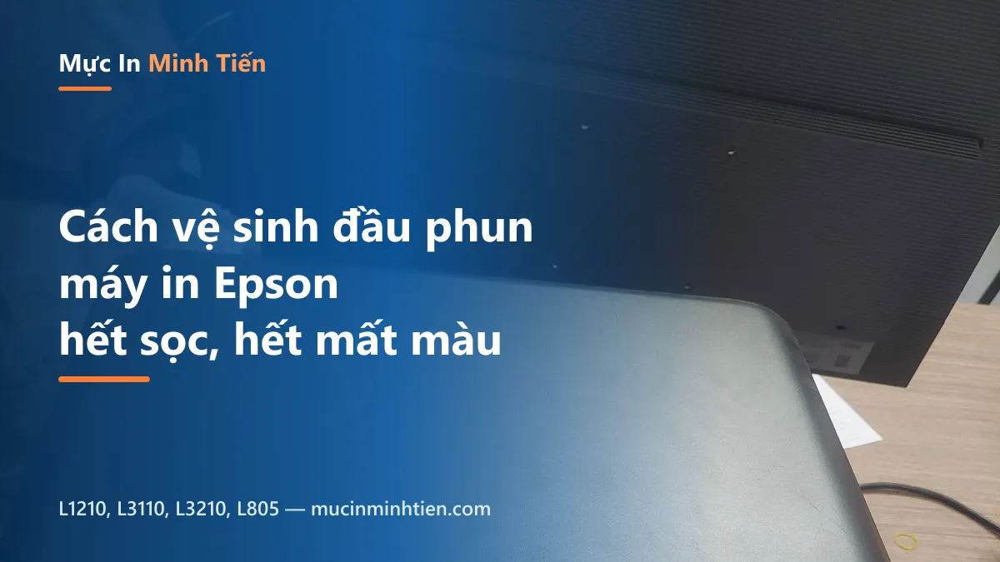
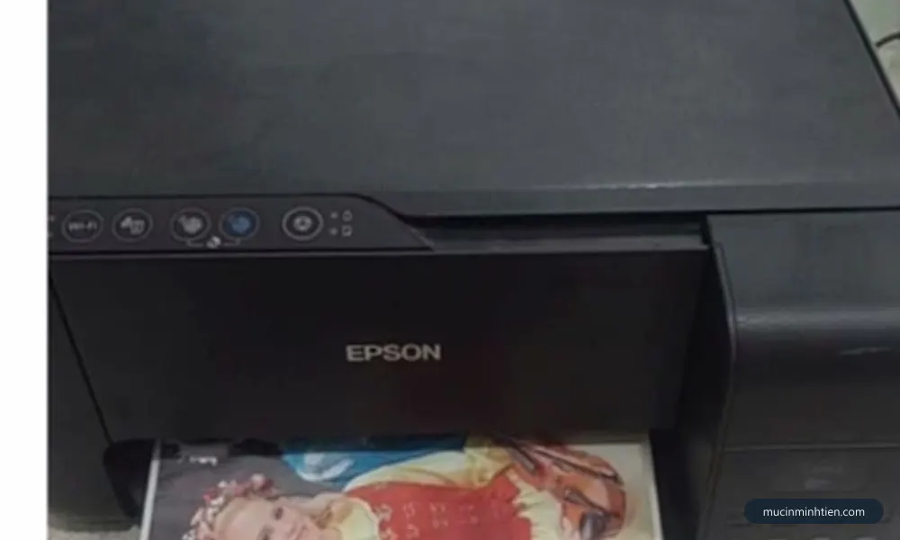
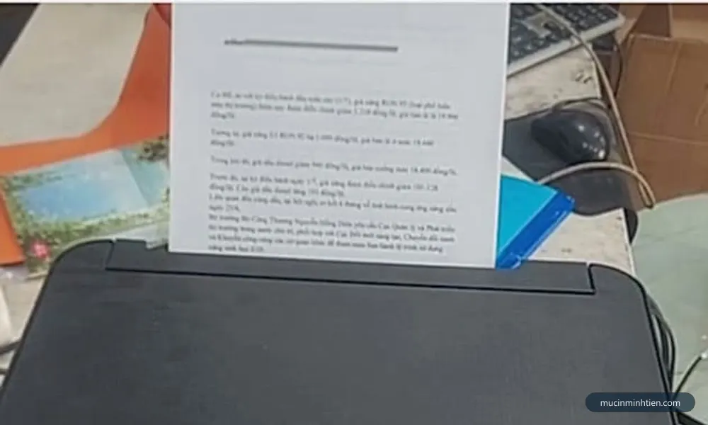
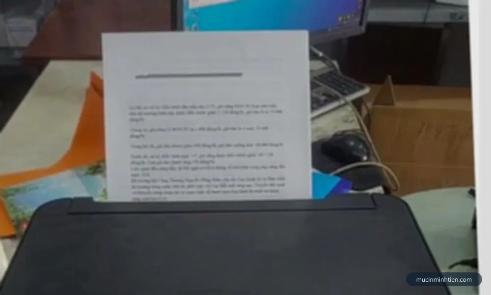
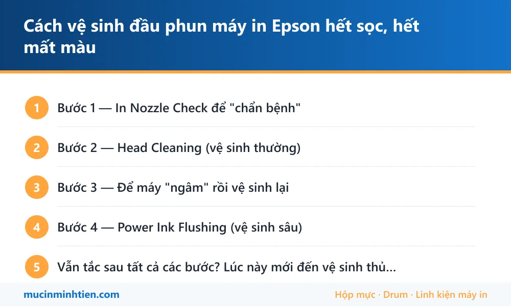

Cách vệ sinh đầu phun máy in Epson hết sọc, hết mất màu

Máy in phun Epson để vài tuần không dùng rồi in ra sọc ngang, chữ đứt nét, mất hẳn một màu — gần như chắc chắn là đầu phun bị khô hoặc tắc. Tin tốt: 80% trường hợp xử lý được bằng phần mềm, không cần tháo máy. Làm đúng thứ tự từ nhẹ đến mạnh dưới đây để tốn ít mực nhất.
Bước 1 — In Nozzle Check để "chẩn bệnh"
- Windows: Settings → Printers & scanners → chọn máy Epson → Printing preferences → tab Maintenance (hoặc Utility).
- Bấm Nozzle Check → Print. Máy in ra bảng lưới 4 màu.
- Đọc kết quả: lưới nào đứt nét, thiếu vạch = màu đó đang tắc. Lưới đều đẹp mà bản in vẫn xấu thì vấn đề nằm ở file/driver, không phải đầu phun.

Bước 2 — Head Cleaning (vệ sinh thường)
- Cùng tab Maintenance → bấm Head Cleaning → làm theo hướng dẫn (máy chạy ~1-2 phút).
- In lại Nozzle Check. Nếu đỡ nhưng chưa hết, chạy thêm tối đa 2 lần nữa, mỗi lần cách nhau vài phút.

Bước 3 — Để máy "ngâm" rồi vệ sinh lại
Nếu sau 3 lần Head Cleaning vẫn tắc: để máy nghỉ 2–3 giờ (hoặc qua đêm), bật lại và chạy thêm 1 lần. Khoảng nghỉ giúp mực tươi thấm và làm mềm cặn khô trong đầu phun — mẹo đơn giản nhưng cứu được rất nhiều ca tắc nhẹ.

Bước 4 — Power Ink Flushing (vệ sinh sâu)
Power Ink Flushing là gì? Là chế độ xả mực mạnh nhất trên Epson dòng L: máy bơm lượng mực lớn xuyên qua toàn bộ đầu phun để tống cặn ra. Chỉ dùng khi các bước trên thất bại:
- Tab Maintenance → Power Ink Flushing (một số driver nằm trong mục nâng cao).
- Xác nhận và chờ máy chạy (tốn mực đáng kể — kiểm tra bình mực còn ít nhất ~30%).
- In Nozzle Check kiểm tra. Chỉ chạy tối đa 1–2 lần — không hiệu quả nữa nghĩa là cặn đã quá cứng, cần can thiệp thủ công.
Vẫn tắc sau tất cả các bước? Lúc này mới đến vệ sinh thủ công
Trường hợp mực khô lâu ngày (máy bỏ không nhiều tháng), phải tháo và ngâm đầu phun bằng dung dịch chuyên dụng — thao tác này dễ hỏng đầu phun vĩnh viễn nếu làm sai (đầu phun Epson khá đắt). Khuyên anh/chị không tự ngâm bằng cồn hay nước nóng theo mẹo mạng. Kỹ thuật viên Mực In Minh Tiến nhận vệ sinh đầu phun + bơm mực Epson tận nơi tại TP.HCM, kiểm tra và báo giá trước khi làm.
